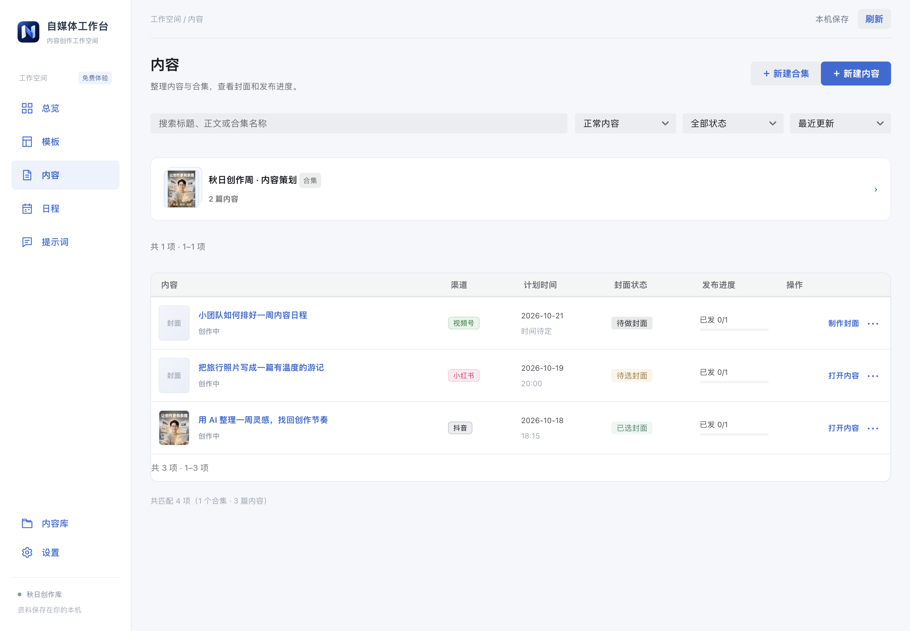
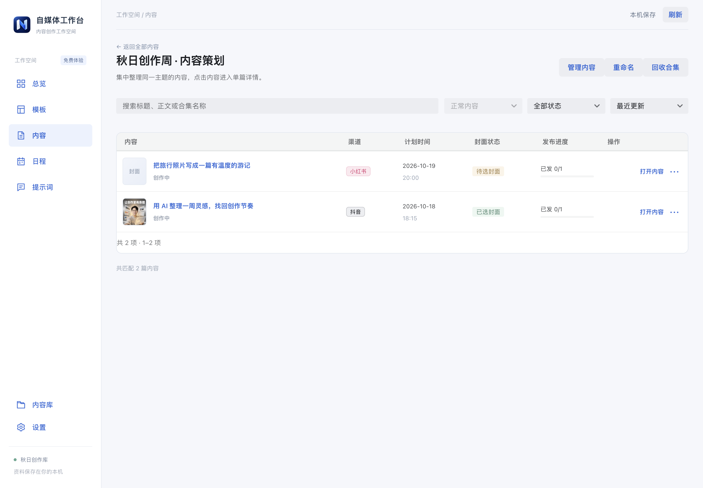
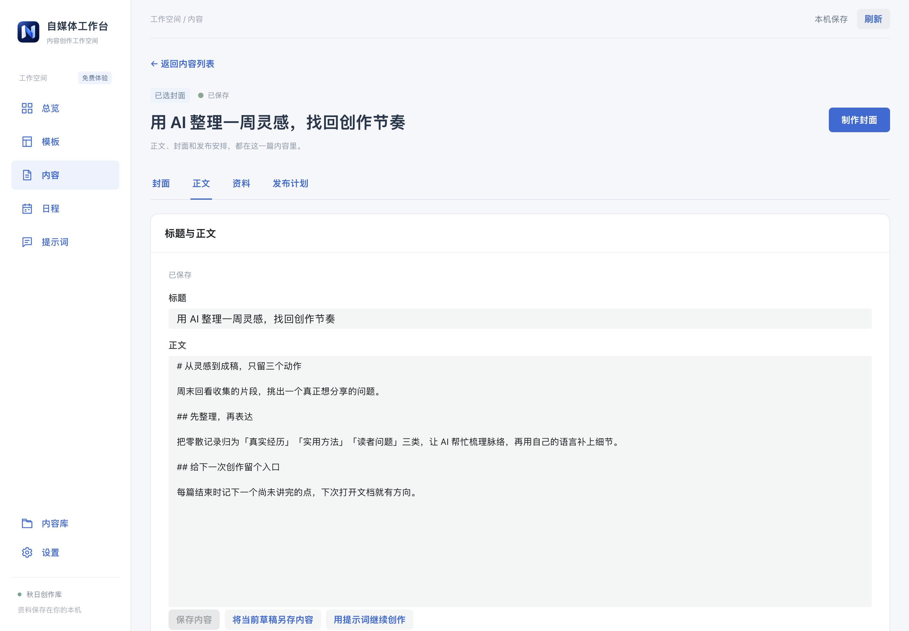
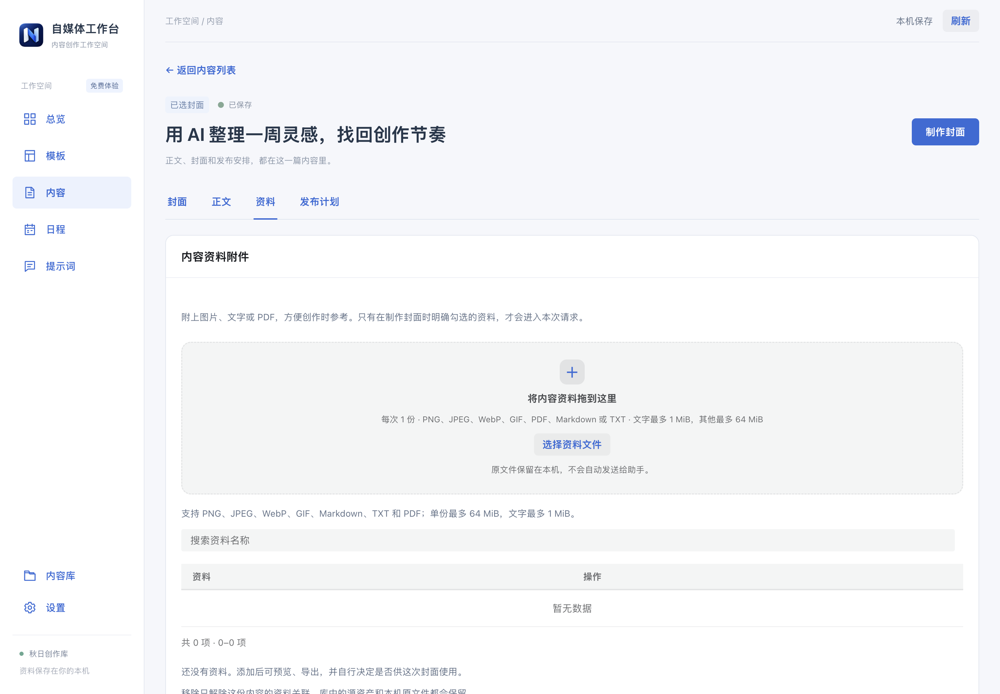
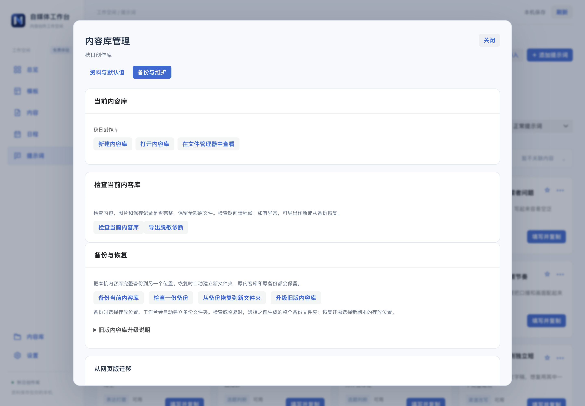

内容列表与合集入口

03-content-list · 实际页面截图 · 点击查看原图
合集中的单篇内容与整理入口

04-collection-contents · 实际页面截图 · 点击查看原图
内容详情的正文编辑区

06-content-body · 实际页面截图 · 点击查看原图
已选封面、候选图与制作入口
07-content-cover · 实际页面截图 · 点击查看原图
内容附件、记录日期与适用渠道

09-content-materials · 实际页面截图 · 点击查看原图
单篇内容的渠道发布计划与历史
10-content-publication · 实际页面截图 · 点击查看原图
备份与维护主屏，未执行任何维护写入

19-backup-maintenance · 实际页面截图 · 点击查看原图